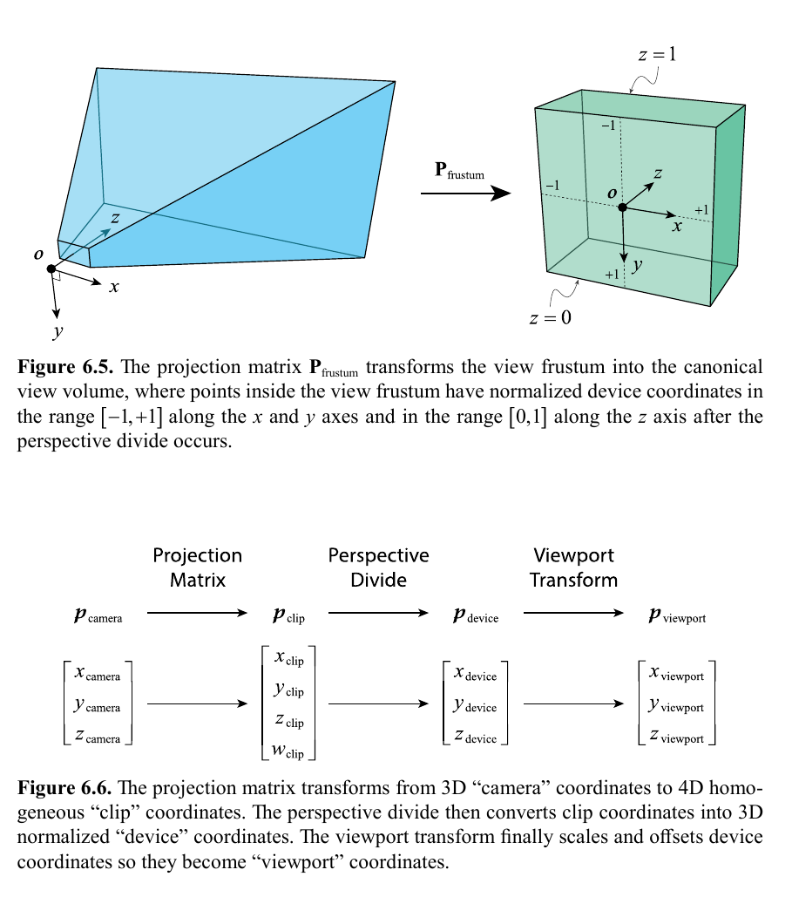
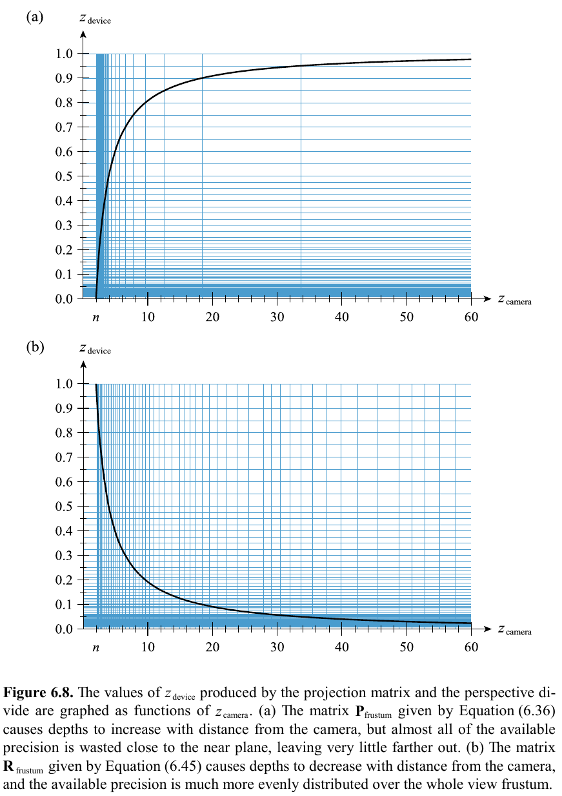
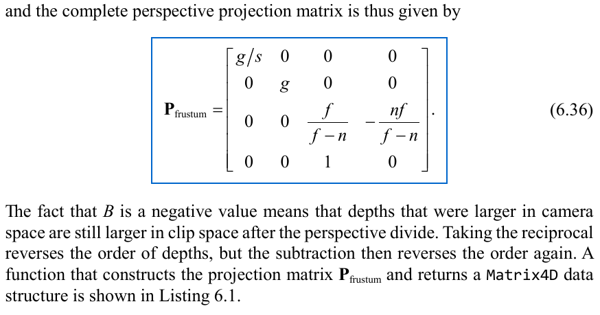
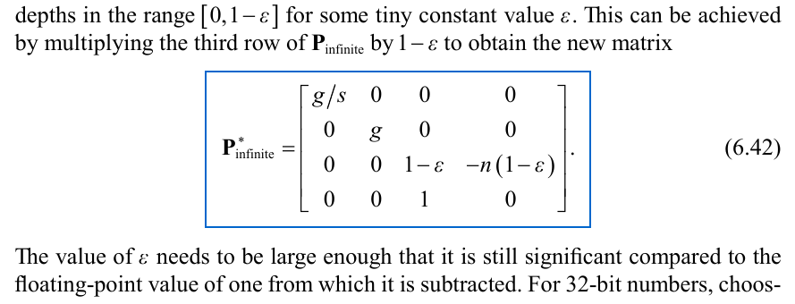
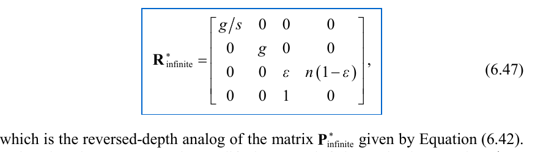
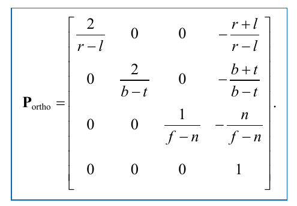

Definitions/Variables used
| Name | Description |
|---|---|
| n | Distance from camera position to near plane |
| Camera View direction | Positive z axis |
| f | Distance from camera position to far plane |
| s | Aspect ratio=width/height |
| g | Distance from camera position to projection plane |
| Field of View | Angle between left/right or top/bottom frustum planes. |
fovY = 2tan-1(1/g)
g = tan-1(fovY/2)
To calculate camera-space frustum planes:
| Frustum Plane | Camera-space (x,y,z,w) |
|---|---|
| Near | (0,0,1,-n) |
| Far | (0,0,-1,f) |
| Left | (1/sqrt(g2+s2))(g,0,s,0) |
| Right | (1/sqrt(g2+s2))(-g,0,s,0) |
| Top | (1/sqrt(g2+1))(0,g,1,0) |
| Bottom | (1/sqrt(g2+1))(0,-g,1,0) |
To calculate the corner points on the near/far frustum planes q0,q1,q2,q3:
| q0 | c + ((us)/g)x + (u/g)y + uz |
| q1 | c + ((us)/g)x - (u/g)y + uz |
| q2 | c - ((us)/g)x - (u/g)y + uz |
| q3 | c - ((us)/g)x + (u/g)y + uz |
x = Mcamera[0] (column 0), y = Mcamera[0] (column 1), z = Mcamera[0] (column 2), c = Mcamera[3] (column 3), u = n for near plane points, f for far plane points.
Reversing the depth buffer value/z allows for less floating point errors/more accuracy at farther z-positions away from the camera as opposed to very close to the near clip plane:
Normal Perspective Projection Matrix:
Infinite Distance Perspective Projection Matrix:
Reversed depth infinite distance perspective projection matrix:
This is a good choice for the default projection matrix to use, just need to make sure to flip the depth test pass condition from "greater than" to "less than"
Orthographic Projection Matrix:
Extracting camera-space planes from "canonical view volume" (normalized device coordinates cube):
| Frustum Plane | Clip-Space | Camera-Space |
|---|---|---|
| Left | (1,0,0,1) | P3 + P0 |
| Right | (-1,0,0,1) | P3 - P0 |
| Top | (0,1,0,1) | P3 + P1 |
| Bottom | (0,-1,0,1) | P3 - P1 |
| Regular projection matrix | ||
| Near | (0,0,1,0) | P2 |
| Far | (0,0,-1,1) | P3-P2 |
| Reversed Depth projection matrix | ||
| Near | (0,0,-1,1) | R3-R2 |
| Far | (0,0,1,0) | R2 |
Pi means projection matrix zero-based index row i, Ri for reversed-depth projection matrix row i
To reflect scene about a world-space boundary plane k, Mreflection = Hreflect(k)Mcamera.
Then to modify a projection matrix to clip points by the boundary plane, replace the third row of P with mk, or R3 - mk for reversed depth proj mat.
m = 1/dot(k,vcamera)
vcamera = (sign(kx)-P02)/P00, (sign(ky)-P12)/P11, 1, (1-P22)/P23)